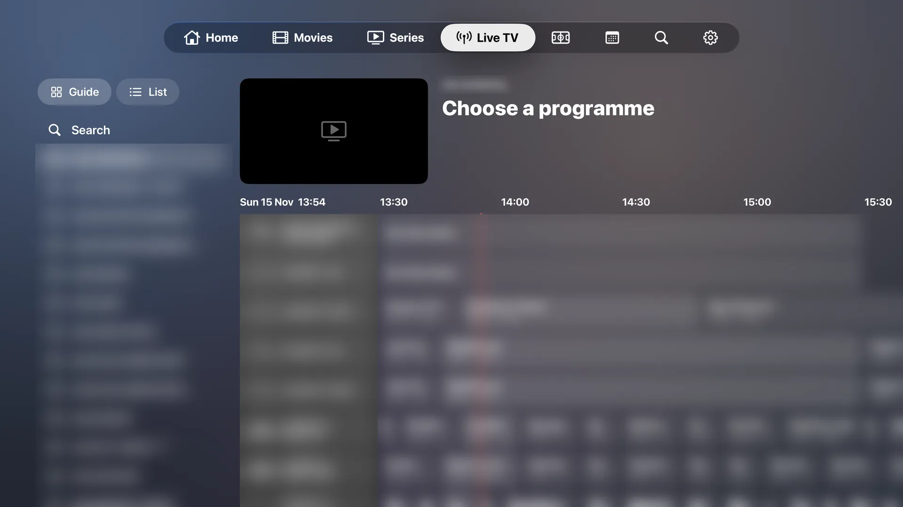
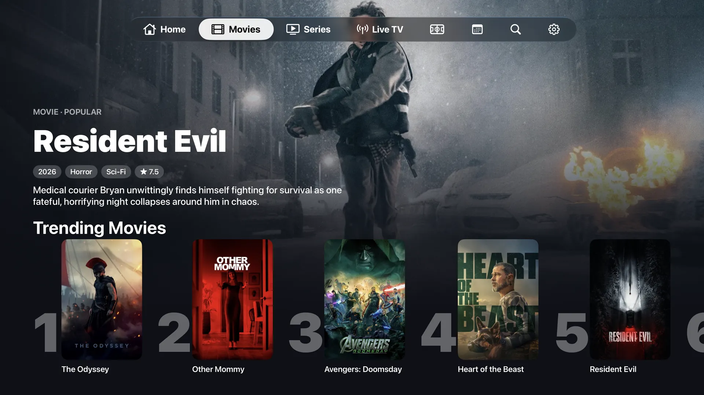
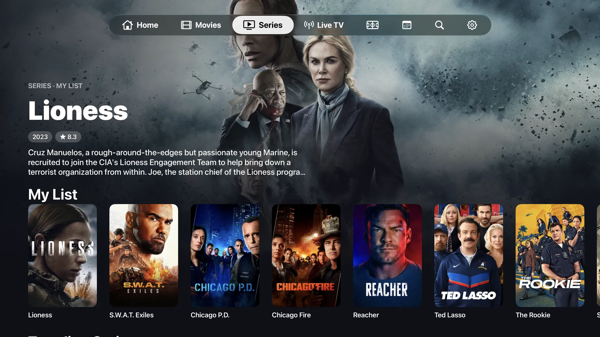
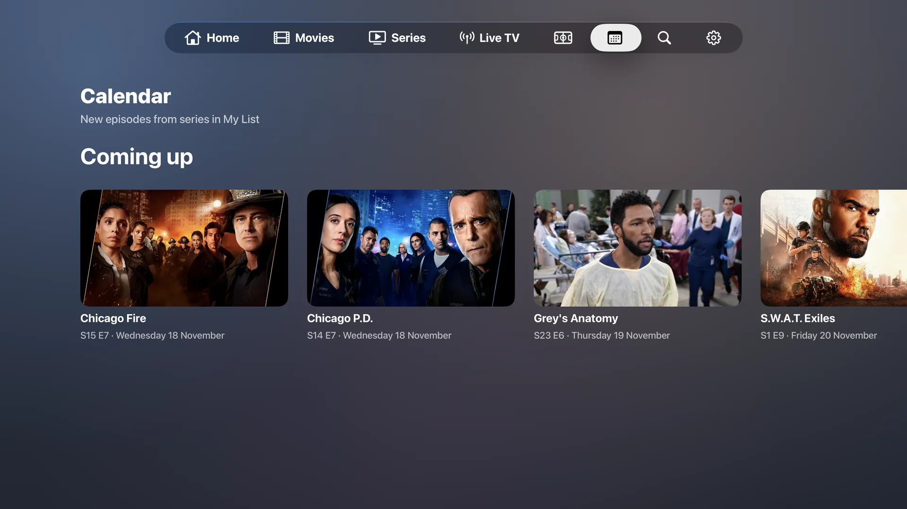
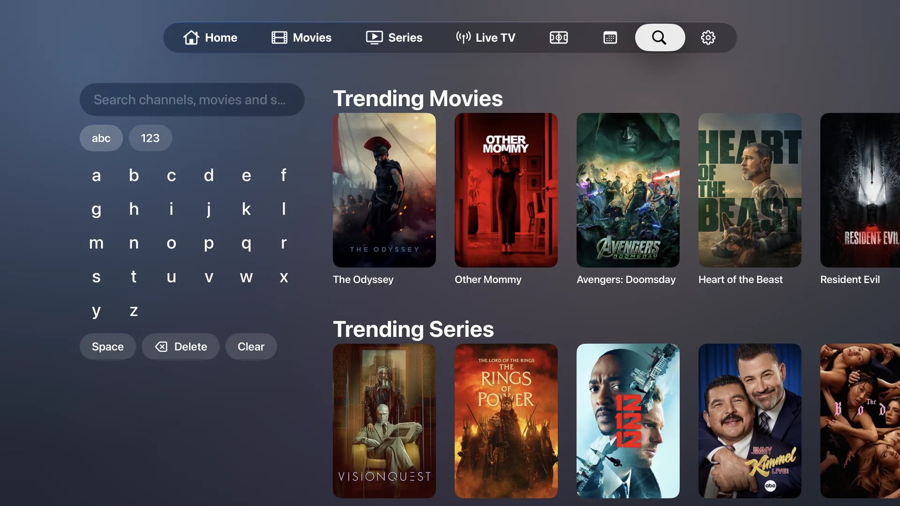
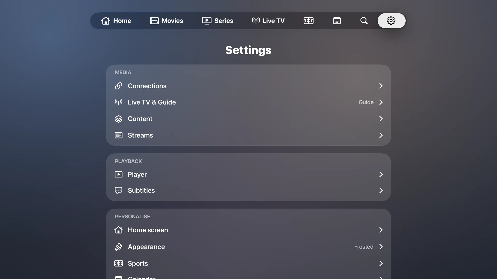

Films & series
Browse trending, popular and new titles, with seasons, episodes and cast. Pick a stream from your addons, filtered by quality.
A short setup on first launch walks you through it. Every step can be skipped and changed later.
Your provider's Xtream Codes server, username and password, for Live TV and the guide. Several accounts? Add them all and switch.
Paste an addon's manifest link. Films and series play from whatever your addons offer.
Pick the teams you care about for live scores, fixtures and finding the channel that's showing them.
Film and TV artwork and details come built in, and Trakt sign-in takes a single code. No API keys to find.
Browse trending, popular and new titles, with seasons, episodes and cast. Pick a stream from your addons, filtered by quality.
A full programme guide, favourites, folders, recent channels, channel search and a last-channel button.
Your teams' fixtures, live scores, league tables and F1 standings. Tellio searches your guide for the channel showing the match.
Watch up to four live channels at once. The sound follows whichever one is highlighted.
Pick up where you left off, see the next episode, and mark things watched. Syncs with Trakt if you use it.
Set a reminder from the guide and a card pops up when it starts, even over what you're watching.
Live games, Continue Watching and what's coming up, right on the Apple TV home screen.
Lock Live TV groups and addons behind a 4-digit PIN, or hide them completely.
Keep more than one provider and switch from the Live TV sidebar. Favourites and folders stay with each account.
Back up everything to your own server, encrypted on the Apple TV, and restore it on another with an 8-character code.
Eight backgrounds, from Frosted and Ocean to pure Black for OLED TVs.
A built-in player engine handles common video and audio formats, subtitles from your addons, and live streams.
Select a game and Tellio checks every channel in your provider's guide at kick-off, in many languages, then lists the best matches first. Live scores update while it's on.

Scroll channels and programmes on a timeline, preview what's on, set reminders, and hide the groups you never watch.
Real screenshots, taken on an Apple TV 4K.





Tellio has no servers that stream video and no catalogue of its own. It plays what your IPTV provider and your addons give it, and adds information from public services.
Tellio isn't on the App Store yet, so for now you install it yourself, with a signing service or a free sideloading tool. It needs tvOS 18 or later.
Get Tellio.ipa from the GitHub releases page. Every build is listed with what changed.
Install it with Signulous, a paid service that needs no computer, or for free with atvloadly on a Linux machine at home.
Follow the short setup. Tellio tells you when a newer build is out.
Yes. There's no subscription and no account to make.
No. Tellio only plays what your own IPTV account and Stremio addons provide. Use services you're entitled to.
An Apple TV on tvOS 18 or later, a way to install it (Signulous, or atvloadly on a Linux machine at home), and an IPTV account and/or Stremio addons.
On your Apple TV, in its Keychain. Backups are encrypted on the Apple TV before they're sent to the server you choose.
Not yet. For now it's installed by sideloading.
Use Settings › About › Send feedback on the Apple TV, or open an issue on GitHub.